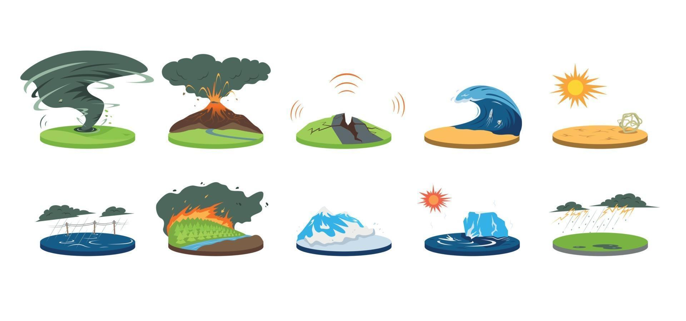
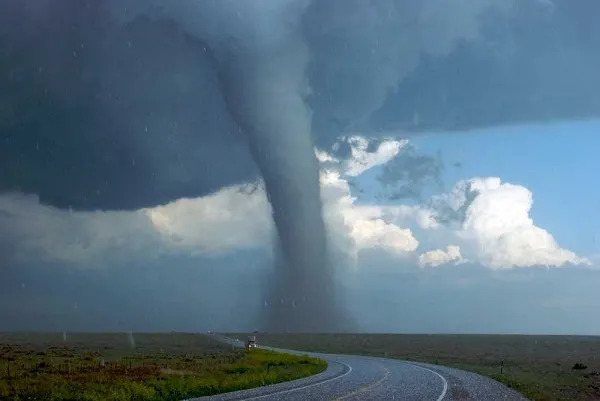
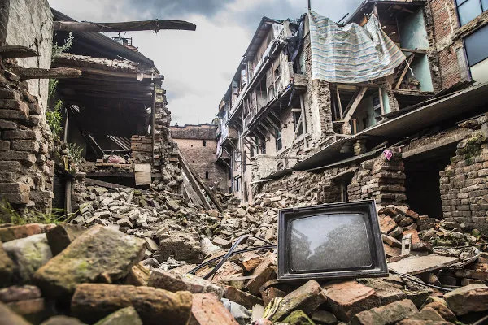
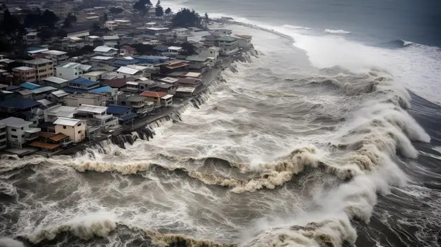
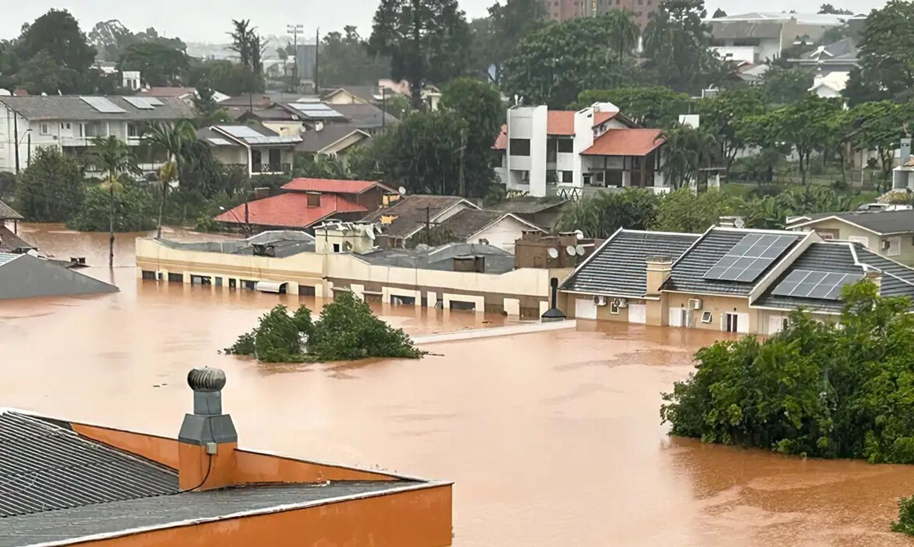
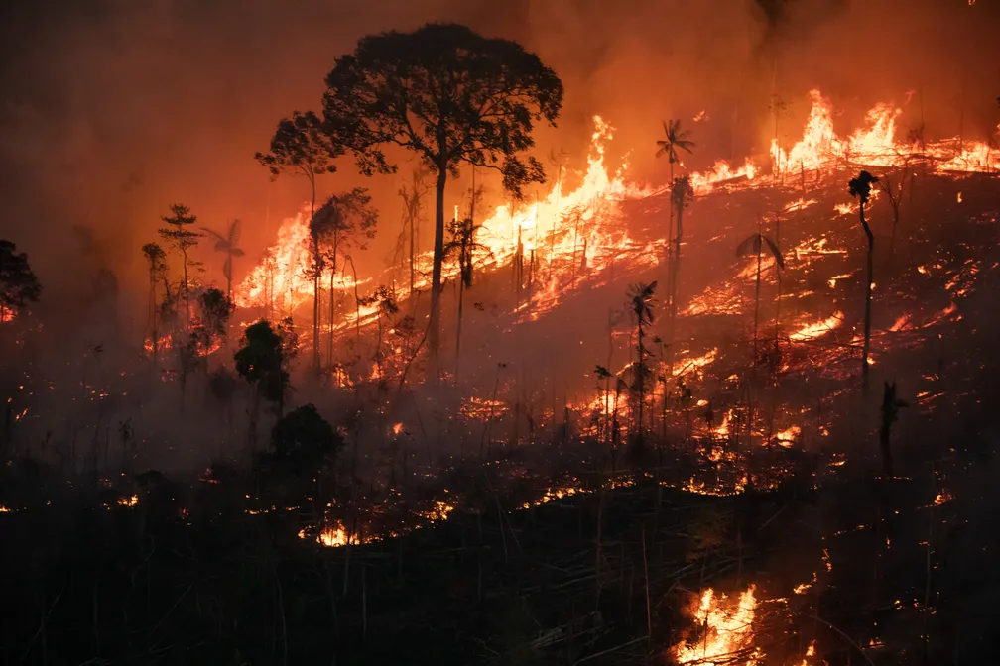
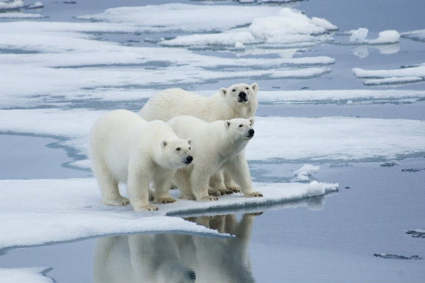
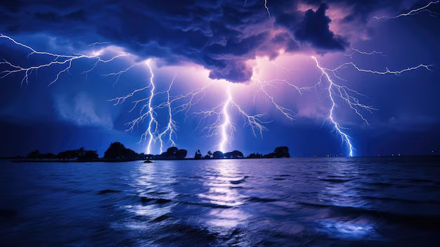

"Tornado é um fenômeno atmosférico associado a uma nuvem de tempestade e condições muito instáveis de tempo. É caracterizado por um funil formado a partir de ventos que giram em alta velocidade em torno de um centro de baixa pressão. Quando o funil toca o solo, o fenômeno recebe o nome de tornado. Embora tenham curta duração, os ventos dos tornados podem superar a velocidade de 400 km/h, adquirindo grande poder de destruição"

Uma erupção vulcânica é um evento geológico dramático que ocorre quando magma, gases e fragmentos de rocha são expelidos de um vulcão. Essas erupções podem variar amplamente em intensidade e características. Existem dois principais tipos de erupções: explosivas e efusivas. As erupções explosivas são violentas e lançam grandes quantidades de cinzas, gases e fragmentos de rocha para o ar, como ocorreu no Monte Santa Helena. Por outro lado, as erupções efusivas são mais tranquilas e caracterizadas pela emissão constante de lava fluida, como as observadas nos vulcões Kilauea e Mauna Loa, no Havaí.

Também chamados de abalos sísmicos, representam fenômenos de vibração brusca e passageira da superfície da Terra que ocorrem por meio da movimentação das placas rochosas, bem como da atividade vulcânica e dos deslocamentos de gases no interior da Terra. Os maremotos ou tsunamis são os terremotos que acontecem dentro dos mares, provocando imensas deslocações de água.

Também chamados de abalos sísmicos, representam fenômenos de vibração brusca e passageira da superfície da Terra que ocorrem por meio da movimentação das placas rochosas, bem como da atividade vulcânica e dos deslocamentos de gases no interior da Terra. Os maremotos ou tsunamis são os terremotos que acontecem dentro dos mares, provocando imensas deslocações de água.

Intensificada com o aquecimento global, a seca tornou-se um problema enfrentado por muitos grupos pelo mundo. Dessa forma, as alterações climáticas demonstram que as ações humanas estão gerando problemas como a seca e consequentemente a expansão do processo de desertificação

As inundações ou enchentes são fenômenos da natureza, intensificados pela ação humana, que estão aumentando de maneira significativa nas últimas décadas. Um exemplo é o excesso de lixo, que entopem os bueiros, impedindo a passagem de água. As enchentes e inundações, causadas pelo aumento de quantidade das chuvas e impedimento da evacuação, provocam desabamentos que podem levar a morte de milhares de pessoas, além de grande destruição.

As inundações ou enchentes são fenômenos da natureza, intensificados pela ação humana, que estão aumentando de maneira significativa nas últimas décadas. Um exemplo é o excesso de lixo, que entopem os bueiros, impedindo a passagem de água. As enchentes e inundações, causadas pelo aumento de quantidade das chuvas e impedimento da evacuação, provocam desabamentos que podem levar a morte de milhares de pessoas, além de grande destruição.

Uma avalancha, avalanche ou alude é um fenômeno que se verifica quando uma massa acumulada de neve, gelo e detritos repentinamente se movimenta de forma rápida e violenta e se precipita em direção ao vale. Durante a descida, arrasta cada vez mais neve e pode arrastar árvores, rochas e construções humanas, atingindo até 160 quilômetros por hora. Este destacamento de massas de neve pode ser provocado por diversas causas, como a passagem de esquiadores, a ação de fortes ventos, propagação do som etc.

O derretimento das geleiras, fenômeno que aumentou durante o século XX, está nos deixando um planeta sem gelo. A atividade humana é a maior culpada da emissão de dióxido de carbono e de outros gases responsáveis pelo aquecimento terrestre. O nível do mar e a estabilidade global dependem da evolução destas grandes massas de neve recristalizada.

As inundações ou enchentes são fenômenos da natureza, intensificados pela ação humana, que estão aumentando de maneira significativa nas últimas décadas. Um exemplo é o excesso de lixo, que entopem os bueiros, impedindo a passagem de água. As enchentes e inundações, causadas pelo aumento de quantidade das chuvas e impedimento da evacuação, provocam desabamentos que podem levar a morte de milhares de pessoas, além de grande destruição.